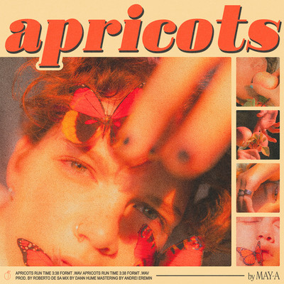
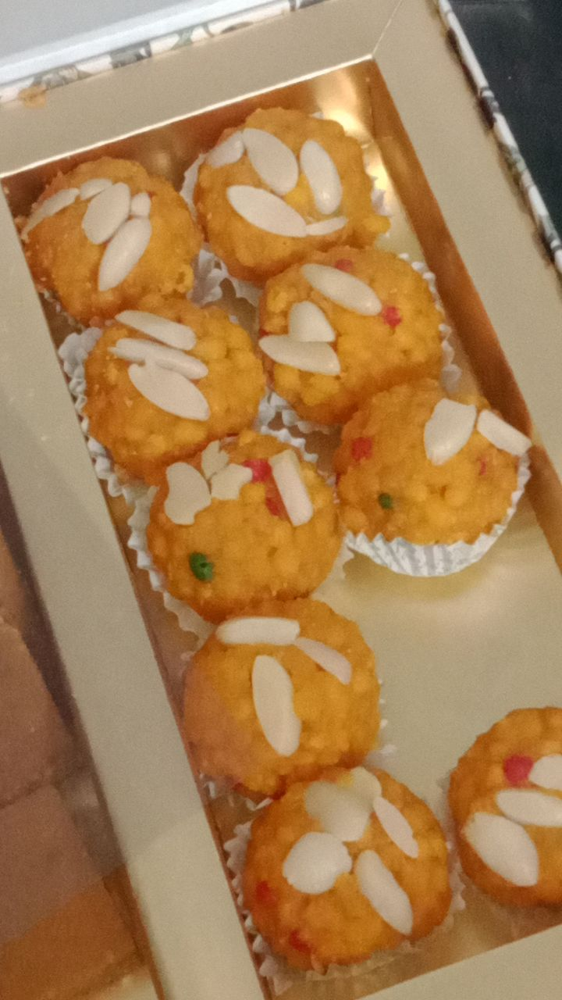

<!DOCTYPE html>
<html lang="en">
  <head>
    <meta charset="UTF-8" />
    <title>Kanumol | Dating</title>
    <link href="dating.css" rel="stylesheet" />
  </head>
</html>

<body>
  <header class="main-header">
    <h1>
      <ion-icon name="heart-circle-outline"></ion-icon>Kanumol<ion-icon
        name="heart-circle-outline"
      ></ion-icon>
    </h1>
    <nav class="main_nav">
      <a href="index.html">Home</a>
      <a href="friendship.html">Friendship</a>
      <a class="working_anchor" href="dating.html">Dating</a>
      <a href="her.html">Her</a>
    </nav>
  </header>

  <script
    type="module"
    src="https://unpkg.com/ionicons@5.5.2/dist/ionicons/ionicons.esm.js"
  ></script>
  <script
    nomodule
    src="https://unpkg.com/ionicons@5.5.2/dist/ionicons/ionicons.js"
  ></script>

  <article>
    <h2>How did we start dating?</h2>
    <p>
      When I proposed you on 2nd November, I asked Ishpuneet to drop me to Guru
      Amardas Chownk and from there, I got into a bus
    </p>

    <p>
      In bus, I, on purpose, added a status, particularly a meme, so that you
      will respond as you always do it 🥺🥟
    </p>

    <p>
      And you did. You did. At exactly 7:41PM and I know, you were there to talk
      to me. And it was on purpose of you sending a message
    </p>

    <p>
      After that, we talked and then went to Telegram. Thori baat hui and all.
      You started giving me gande responses. Attitude aaa gya tha 😭. I said ki
      merko bus mein seat mili as a good guy gave me his seat. And you said
      "vadia h". I said "yup" and you, you said "hm" 😭
    </p>

    <p>
      Fir I asked you "But bus late aundi boht. Shdo. Hor dso". You said "ki
      dsan 😂". I was like btade bey. Kyu tang kr rhi. I know terko mai psand
      hun. Paagal 😒🤣. Then you were telling me ki how Gursanjam and Aman
      stopped to see what is happening between us and what did I handover.
    </p>

    <p>
      Then you said "Bbye..". I said "Goodbye. Take Care 🔥 👍". You said "Tc"
      😒. Katti paalo mere sath ab. Gande. Mai n bulauna hun tuhanu. Menu mnao
      hun. Huh
    </p>

    <p>
      Fir I started telling you ki how I created all that proposal after you
      said "Vese tusi literally maths di class ch das min laye likhn ch . Mein
      vekhan ki tusi padhde tan paye nii.. kuch rough copy ch likh rhe... 😂"
    </p>

    <p>
      Then we laughed and told you kaise likha XD. And I told ki Gursanjam bhi
      concerned dekh rha tha XD
    </p>

    <p>
      And then Superkanushi, asked indirectly ki merko woh bhejna jo likha XD
      <br />
      "Vese .. mein lines bhul gayi.. zara bhejyo photo😃"
    </p>

    <p>Then I sent that but likhke XD. Meri writing gandi hai toh hna XD</p>
    <p>
      We talked stupid c things and then you left without saying anything :(
    </p>
    <p>
      Then you responded to my msg I sent during our chat : <br />Yaar you might
      be thinking. Eh ta pehla kehnda c ki teenage relationships ajeeb hunde.
      Jekr yaad hove. But ohdo mai tuhanu ina changa n jaanda c ki eh ek 💎 aa.
      Dusra. Tusi Devishi vang n ho, Jis trah jo v aa. Oh pehla pdhn ch vdia c.
      Ajj menu puchh reha aa ki ki chal reha class ch. You are better. And in my
      eyes best<br />
      And yes, you are a <strong>diamond, my darling </strong>
    </p>

    <p>
      You responded to this janke subah ko kyunki I didn't send a text (bdey tez
      ho) and said "💎😂😂😂😂😂"
    </p>

    <p>
      Then apka pumpkin started flirting with you subah XD by asking "Ohda kuch
      sochya?" and by sending this
    </p>

    <p class="few_lines">
      Your eyes are deadly,<br />
      Just like Bluezone.<br />
      You dont deserve a seat,<br />
      You deserve a throne.<br />
      Do you have any idea about,<br />
      This heart you own?
    </p>

    <p>
      We started talking, in which you were telling ki how you couldn't sleep
      and for that reason, you watched Squid Game XD. Also, you responded badly
      to my rhymes and only said "😂Bas plzzzz..". I am sad over this bhi tk :(
    </p>

    <p>
      Then you said ki "Diwali break ton baad jdon offline aayenge tab
      pakka👍😂" in respond to my "but btana 🥺"
    </p>

    <p>
      Time passed and we started talking more same time pe. I was telling ki
      what I did and you were making excuses to not accept my proposal 😒
    </p>

    <p>
      We talked abt foods, sleeping, our moms daanting us when we sleep kahin
      bhi, relationship Devishi Satyam ka in which you said "he loves her ❤️",
      we talked about other people and boht
    </p>

    <p>
      We were talking ki yeh kaise basement mein romantic hote. Hum bhi hote the
      jab we meet now 🙈🧿🤗💋
    </p>

    <p>
      then as you weren't answering ki you like me, I sent you a song. Click on
      this image below
    </p>
    <a href="https://www.youtube.com/watch?v=NjOYC0Hn9F4" target="_blank">
      
    </a>

    <p>
      I added the youtube link even though it was the Spotify link which I sent
      you. It is because it is then easier to open it anywhere (on laptop and
      mobile)
    </p>

    <p>
      The main reason for me sending this was because of a few lyrics as given
      below:
    </p>
    <p class="few_lines">
      In my imagination you and I <br />
      We can fall asleep under lilac skies <br />
      We can take a trip anywhere we like <br />
      'Cause in my imagination you are mine (mine) <br />
      <br />
      I'm something that you don't<br />
      Something, something that you don't know<br />
      Something you don't know you want<br />
      I'm something that you don't<br />
      Something, something that you don't know<br />
      Something you don't know you want
    </p>

    <p>Then you accepted it at 5PM by sending me this:</p>
    <p class="acceptance">
      Alright... Enough of it.. i admit that I started liking u from quite a
      while but was tooo shy to express or say something.. <br />I still think
      that all of this is merely a nightmare...<br />
      But I still want u to know that frndships is something that I've always
      considered at the top coz I know how bad I am at making frnds and so I
      don't want to loose them... It would be great if we give a try to what we
      have in our minds... But u need to agree to a fact that no matter what
      happens ahead... We will remain as good frnds as we are rn... Sooo ig...
      Ummm, it's a YES<br />
      <br />
      Then six minutes later, you sent me this XD <br />
      Ughh, my heart is beating so fast... Why u taking so much time to see the
      mssg😰
    </p>

    <p>Then you, at 5:28 sent me this pic XD</p>
    
    <p>
      I was so excited and I was asking this even after you said yes: "So you my
      GF? 🥺🥺🥺", to which you responded "Ig😂". My dumbass didn't understand
      and asked you again, and you said <br />
      Yess 🙈💘🧿
    </p>

    <p>
      It was my best bday gift and diwali gift because in that, I got you
      🥟😍🤤💘
    </p>
  </article>

  <aside>
    <h3>Related</h3>
    <nav class="related_nav">
      <a href="index.html">Home</a>
      <a href="friendship.html">Friendship</a>
      <a class="working_anchor" href="dating.html">Dating</a>
      <a href="her.html">Her</a>
      <a href="past_writings.html">Old writings</a>
      <a href="#">New writings</a>
      <a href="#">Songs dedicated to her</a>
      <a href="#">Movies to watch together</a>
    </nav>
    <button></button>
  </aside>
</body>
